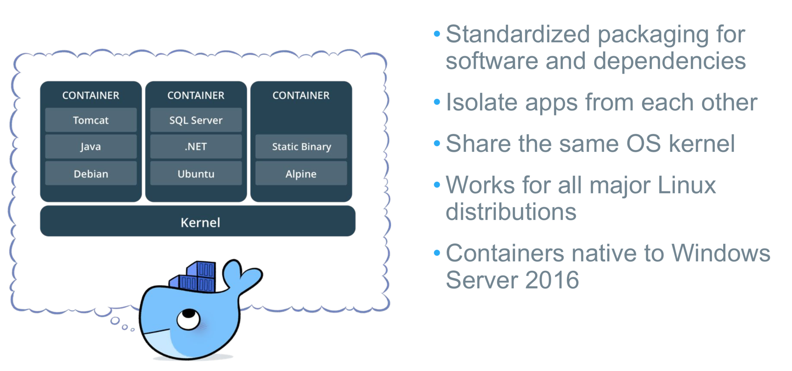
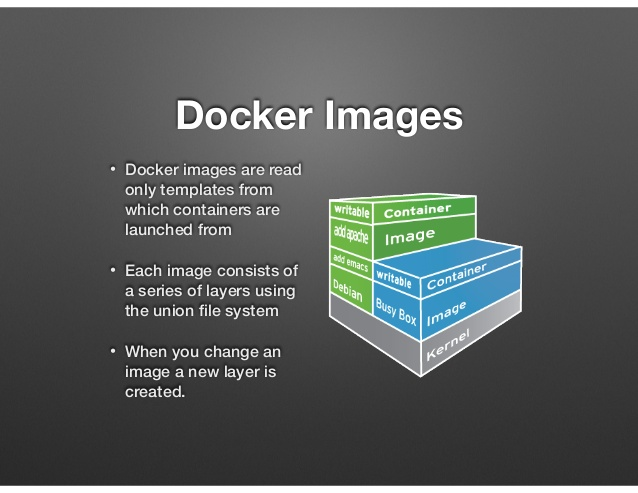
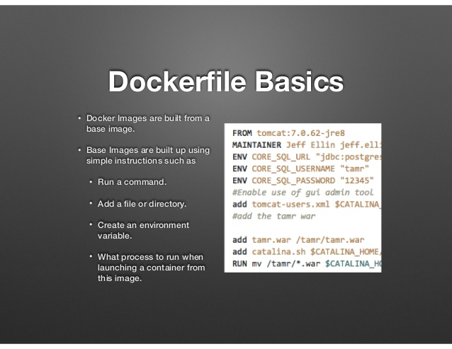
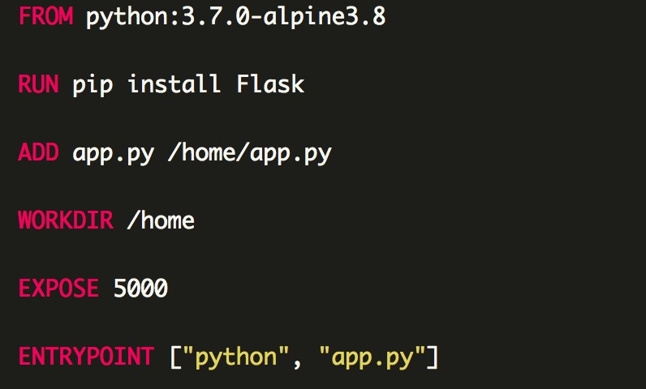
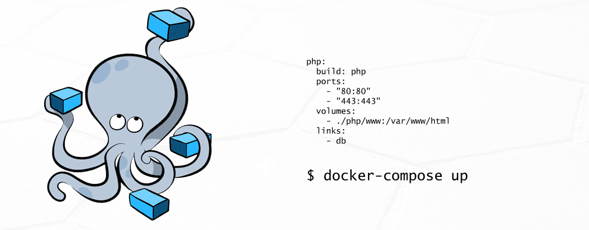
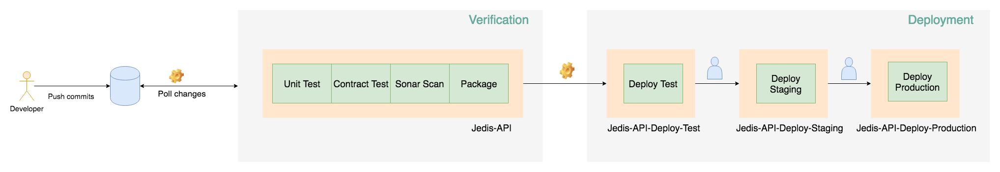

Docker 101
The Challenge

Cargo Transport Pre-1960

Solution: Intermodal Shipping Container

Docker is a Container System for Code

Docker Eliminates the Matrix from Hell

What's docker
- Docker is an open platform for developing, shipping, and running applications.
- Docker enables you to separate your applications from your infrastructure so you can deliver software quickly.
- With Docker, you can manage your infrastructure in the same ways you manage your applications.
Docker to Rescue

Why Developers Care
Build once... (finally) run anywhere*
- A clean, safe, portable runtime environment for your app.
- No worries about missing dependencies, packages and other pain points during subsequent deployments.
- Run each app in its own isolated container, so you can run various versions of libraries and other dependencies for each app without worrying.
- Automate testing, integration, packaging...anything you can script.
- Reduce/eliminate concerns about compatibility on different platforms, either your own or your customers.
- Cheap, zero-penalty containers to deploy services. A VM without the overhead of a VM. Instant replay and reset of image snapshots.
Why Administrators Care
Configure once... run anything
- Make the entire lifecycle more efficient, consistent, and repeatable
- Increase the quality of code produced by developers.
- Eliminate inconsistencies between development, test, production, and customer environments.
- Support segregation of duties.
- Significantly improves the speed and reliability of continuous deployment and continuous integration systems.
- Because the containers are so lightweight, address significant performance, costs, deployment, and portability issues normally associated with VMs.
Why it Works: Separation of Concerns

Docker Architecture

Docker Architecture

Changes and Updates

How to - Run container
- Run command in container
- Use interactive shell in container
- Run application in container
- Publish container ports
- Run container in background
- View container logs
- Mount local files in container
- Pass environment variables into container
- Attach to a running container
git clone https://github.com/yutaodou/docker-intro.git
Docker image

Docker image

Docker image

cd apps/web1 && docker build -t web-demo:1 .
How to - Run multi-container Docker applications

Use case - Jedis Pipeline

Want to Learn More?
- www.docker.io
- Documentation
- Getting started (tutorial, installation, guide, etc)
- Introductory whitepaper
- Github: dotcloud/docker
- IRC: freenode #docker
- Google Group: docker-user
- Twitter: @docker
- Meetups: www.docker.io/meetups